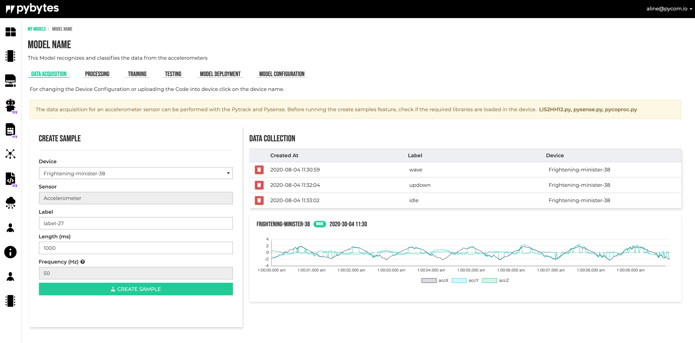
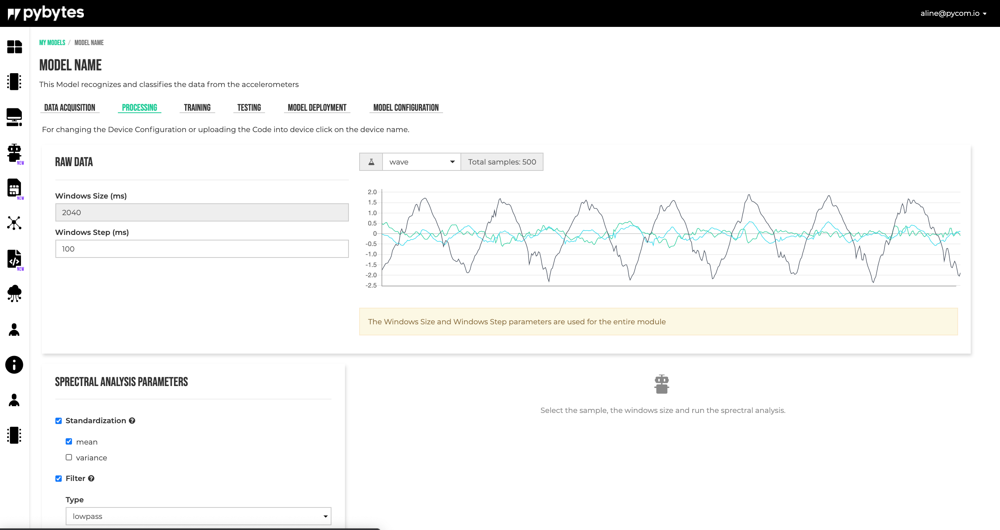
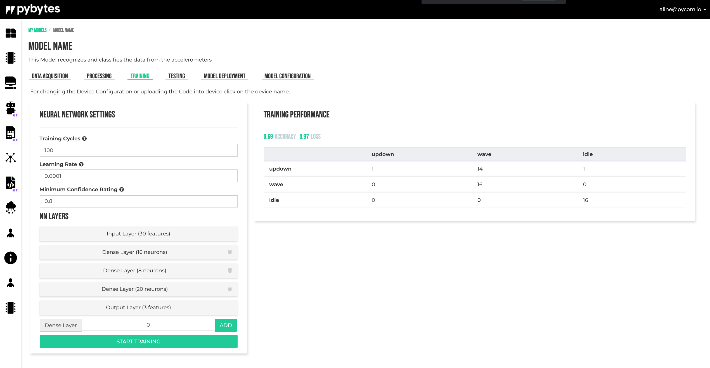
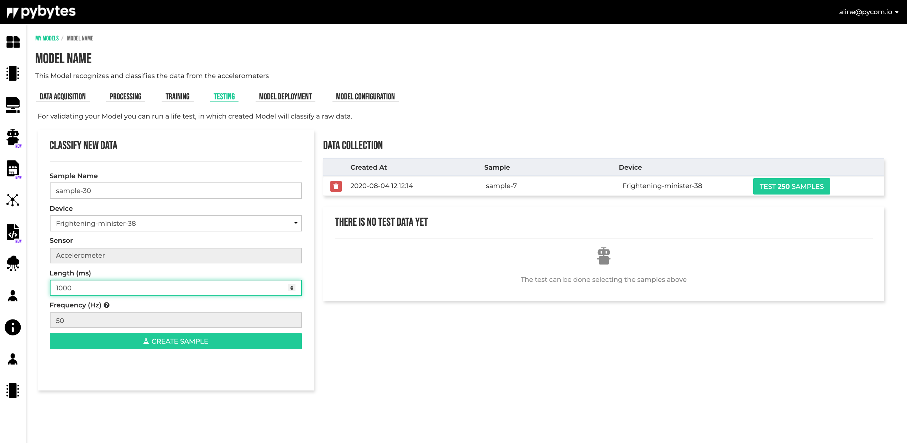
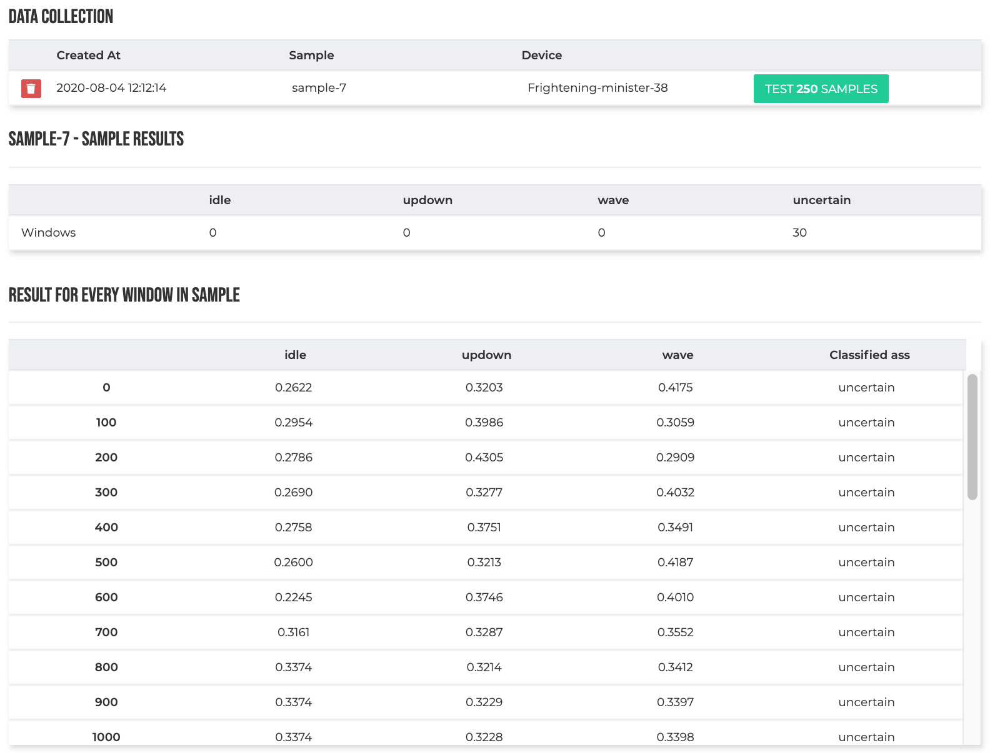
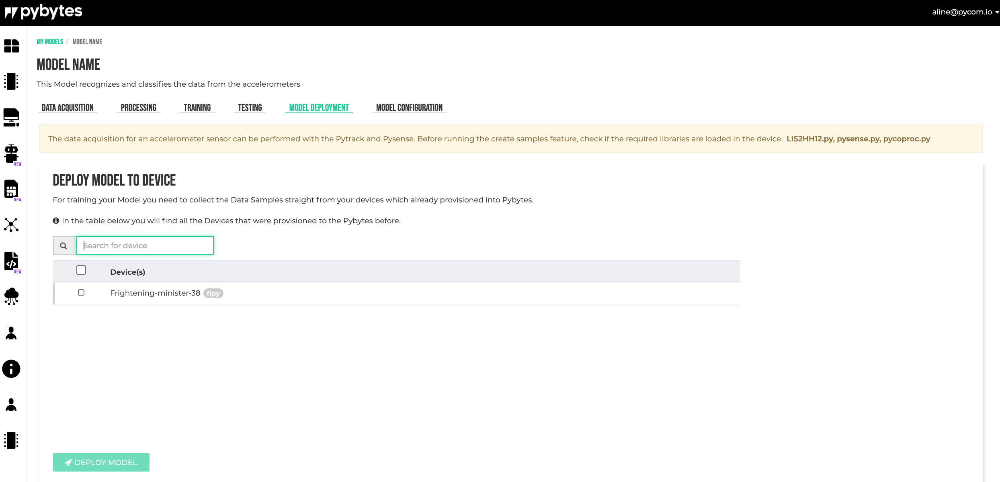

In the data acquisition module the samples for training can be collected.
After setting all sample parameters in the form click on Create Sample to start.
The sampling occurs when the device led is amber, when the light turns purple, the device is processing and saving the samples.
If the device gets stuck showing the purple light, maybe the sampling should be done again.
The data collection shows the collected samples. Click on the sample to see the graph.

Signal processing is used to extract features for the Neural Network module.
There are many ways to extract features. The simplest way is using convolutional layers, but doing this there is no control of what features will be used and also the convolutional layers make the neural network bigger, so more data is needed for training.
Signal processing provides an easy and intuitively way to extract features and also the features can be analyzed using different methods.
The input data consists from accelerations values on three axes (X, Y, Z). To analyze the data, a window of a certain size is moved over the data using a moving step. The Window Size and Window Step are model specific and they are defined in the Model Configuration tab. This window is received by the signal processing block as input.
First, the window data can be standardized by subtracting the average and dividing it by its standard deviation, thus obtaining a window with zero mean and a variance equal to one.
After the window is standardized, a filter can be applied to the data. The type of the filter (none, low-pass, high-pass), the cutoff frequency and the filter order can be selected by the user.
Using Fourier analysis (FFT transform), features are extracted from the data.
Features are calculated for every axis (X, Y, Z), independently of other axes. The next features are available to be selected/used by the user:
To select the desired features and also to see the filtered data and calculated FFTs, select the data window to be analyzed, fill in the form and click the Process Signal button.

The neural network receives its input from the Signal Processing block.
The number of layers and the number of neurons in this layer can be selected by the user. For the moment there are supported only dense layers as hidden layers. Other parameters that can be selected are: the number of training epochs, the learning rate and the confidence threshold.
To train the model, fill the Neural Network Settings form and click on START TRAINING button.
The results can be checked on the Training Performance section.

In the module, the samples for testing can be collected.
After setting all sample parameters in the form click on Create Sample to start.
The data collection shows the testing collected samples. Click on the Test xxx Samples to test the module.

After the testing is performed, the results can be checked below the Data collection form.

After all training and testing, the model can be deployed into the devices.
Select the devices and click on the DEPLOY MODEL button.

Once the model is deployed on the device, it can be called from python code to classify new gestures using the data collected from the accelerometer sensor.
The path to the deployed model is: flash/model_definition.json. This file is going to be used by the device firmware, and once generated it should not be changed by the user. Any changes can cause features to malfunction.
The pycom module provides two functions for model interaction: pycom.ml_new_model() and pycom.ml_run_model(). Below is a very simple example:
from math import ceil
from math import sin
import json
import pycom
# This is just a dummy example. In a real application, the input
# data should be collected from the accelerometer.
def new_model(model_str):
"""Instantiate deployed model."""
return pycom.ml_new_model(model_str)
def run_model(window_data):
"""Run model to classify data."""
result = pycom.ml_run_model(window_data)['NN']
# Map probabilities to labels and print the result.
print('Results:')
for (label, index) in nn_block['trained_nn_model']['label_to_id'].items():
print(' {}: {:.2}%'.format(label, result[index] * 100))
# Read deployed model.
with open('/flash/model_definition.json') as file:
# Parse the model_definition.
model_str = file.read()
model_dict = json.loads(model_str)
# Read blocks.
for block in model_dict['blocks']:
if block['block_type'] == 'pre_processing_block':
pp_block = block
if block['block_type'] == 'nn_block':
nn_block = block
# Compute the number of samples in a moving window. A sample
# consists from three values, coresponding to the X, Y, Z axes.
number_of_samples = ceil((pp_block['window_size_ms'] / 1000) * pp_block['sampling_frequency']) + 1
# Generate a dummy moving window.
window_data = []
for i in range(number_of_samples):
value = sin(i * 2 * 3.141592 / number_of_samples)
window_data.append(value) # x_value
window_data.append(value) # y_value
window_data.append(value) # z_value
if new_model(model_str):
print('Model succesfully created')
run_model(window_data)
# TODO: Add example.